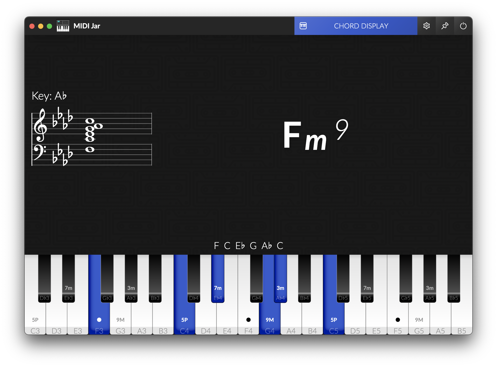
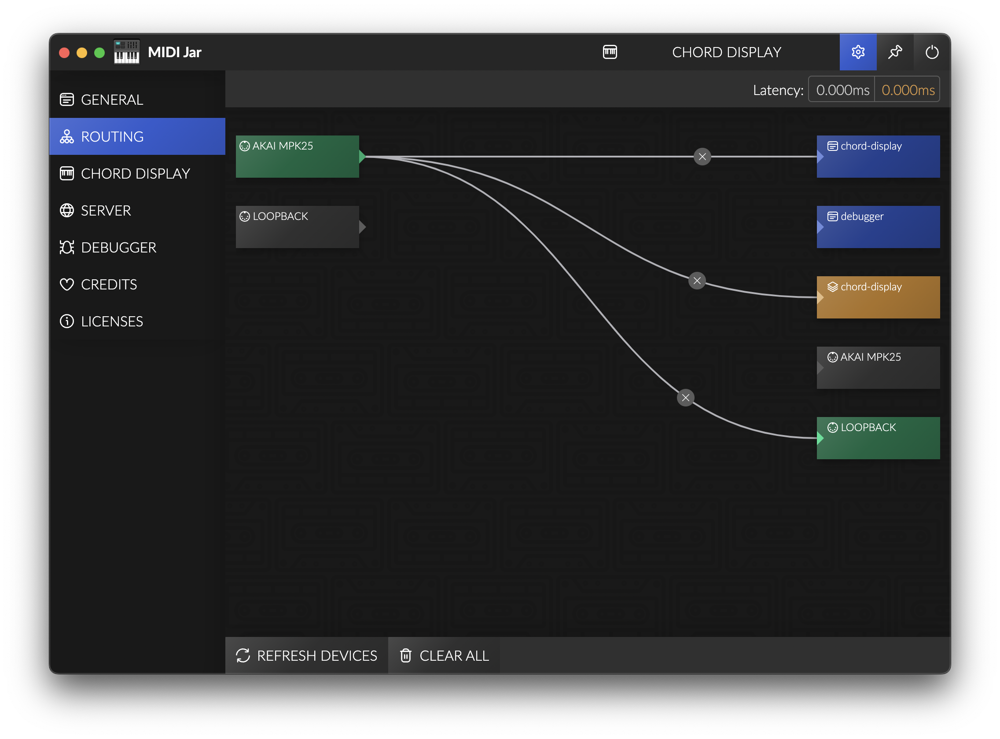

MIDI Jar is a tool box for musicians, learners, streamers, that want to route MIDI message between devices, and display a piano or monitor chords while playing, and integrate it on a video or on a Twitch stream with OBS.

Check out the releases on Github: Releases
Due to code sign certificates being a bit expensive, MIDI Jar is not signed (yet?).
If you are willing to help me sign this app, financially, don't hesitate to contact me.
So to install it on Windows, Windows Defender may block it, and warn you that this could be dangerous. You can still execute it anyway.
On MacOS though, the .dmg or any downloaded unsigned file will be blocked, as if "app is damaged and can’t be opened".
You will need to unquarantine the file after you downloaded, by executing in a terminal:
xattr -dr com.apple.quarantine <Your Downloaded File Name>
I needed a way to display a piano and monitor chords when i was playing, but found no solution to do it properly.
So I created a previous tool called Chord Display to do it in a Web browser, but due to Windows having exclusive MIDI (only one software can use the same MIDI device at a time), I needed a new solution.
Plus, OBS BrowserSource is unable to use MIDI devices, so integrating it in a Twitch stream was not possible.
MIDI Jar fixes all theses issues as a Standalone Desktop Application made with Electron.
MIDI Jar includes:
You can route MIDI between devices, or to internal and external modules of MIDI Jar, and MIDI messages will be routed when the application is running.
This can be a simple alternative to replace complex softwares like MIDI-OX if you just want to route messages from a device to another.
Windows Standard MIDI drivers are exclusive, only one software can be connected to a device at the same time.
If you want to use MIDI Jar with other sofwares like your DAW, or a Standalone VST, you should install loopMIDI by Tobias Erichsen.
You will be able to create multiple Virtual MIDI devices (loopbacks) and route MIDI messages to it. Plus, those virtual devices are non-exclusive, so multiple softwares can use them.

MIDI Jar may introduce latency to MIDI messages. I did my best to keep it as low as possible, in the Routing settings page you can see the latency that is introduced by your config: this is only the latency added to the existing latency, from when MIDI Jar receives a message, and forwarded it to other devices and modules.
Any other latency (due to USB, your device drivers or LoopMidi loopback) is not taken into account.
My tests had an average additional latency < 0.2ms but this can vary a lot with PC configuration, routing, and CPU Usage, and some freezes could occur.
Chord Display is a module of MIDI Jar for displaying a piano keyboard and the chords played.
It uses the detect feature from tonal.
To use it, route your MIDI devices to the internal chord-display output.
You can enable displaying the standard music notation in Chord Display.
It is implemented with VexFlow and supports displaying notes in any major Key.
NOTE: Key signature that would have more than 7 alterations will be changed automatically to the equivalent major key (e.g. G# will produce a key signature of Ab).
DISCLAIMER: As i am not really into reading and writing music, Chord Display notation could be wrong... If so, do not hesitate to post an issue.
Chord Display rendering is customizable in the Settings:
flats ♭ or sharps ♯classic - a classical looking pianoflat - a simplified version on a single rowkey names - name of the noteschord degrees - degrees of each note of the detecterd chordtonic - a little dot on the chord tonicchord - the detected chordnotation - the music notation of the played notespiano - a keyboard displaying your played notesalternative chords - a list of other detected chord names if anyOBS Browser Source let you inject any CSS in the page, so you can add any style to existing layout, like:
Remove detected Chord:
#chord {
display: none;
}
Remove Bass Note / Slash chord / Compound chord notation:
.chord-root {
display: none;
}
Remove played Notes:
#notes {
display: none;
}
Remove piano keyboard:
#keyboard {
display: none;
}
Change display order:
#keyboard {
order: 1;
}
#chordDisplayContainer {
order: 2;
}
#notes {
order: 3;
}
Change Text Color:
body {
color: #fff;
background: transparent;
}
Change chord size and placement:
#chordDisplay {
align-items: flex-end;
justify-content: flex-end;
padding: 2vh;
flex-direction: column-reverse;
}
#chordDisplayContainer {
align-items: flex-start;
justify-content: space-between;
}
#chord {
flex-grow: 0;
font-size: 10vh;
}
#notes {
display: none;
}
#alternativeChords {
display: none;
}
#notation {
color: black;
width: 300px;
height: 300px;
background: rgba(255, 255, 255, 0.3);
border-radius: 32px;
margin-top: 16px;
}
It enables integrating modules in an external web browser, or in an OBS Browser Source. For instance, you can integrate MIDI Jar in your Twitch stream, or load it on a different computer or phone for displaying chords while jamming, and even use it as a Desktop Wallpaper using Lively Wallpaper.
Chord Display module has dedicated settings if you need a different rendering when using external access, and they are automatically synced when you change them.
To use it, route your MIDI devices to the overlay chord-display output.
This project is built with Electron & Webpack:
npm install
npm run start
-or-
npm run package
This project is fully open to contribution and it would be appreciated to have some feedbacks and new ideas.
Please feel free to open an issue or open a Merge request.
For any UI or UX bug, please Open an issue.
If you discover unexpected Chord detection, please see tonaljs/tonal issues and contribute to make it work perfectly.